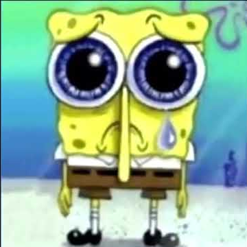

About me
Short introduction
Hi. First off, welcome to my website.
You may wonder why it looks like it's from 2007; This is mostly because
1) I enjoy this aesthetic and
2) I'm not very good at making websites.
Social media
I'm currently active on YouTube and Discord.
Sometimes I'm active on Twitter too, but I very rarely check anything on there.
Discord: Swirrel#0079
YouTube: Swirrel
YouTube: Aberatii
Longer introduction
I'm a self-taught programmer from Romania. I'm also a computer enthusiast,
Both new and old.
The languages I can speak are: English, Română and a bit of русский (I don't understand a lot of words, but I can read it).
I want to study Computer Science and become an IT Tester or security analyst in the future.
This whole website is mostly just a passion project, and a way for me to test myself. This website isn't really meant to be anything serious.
This site is very wonky and is coded poorly.